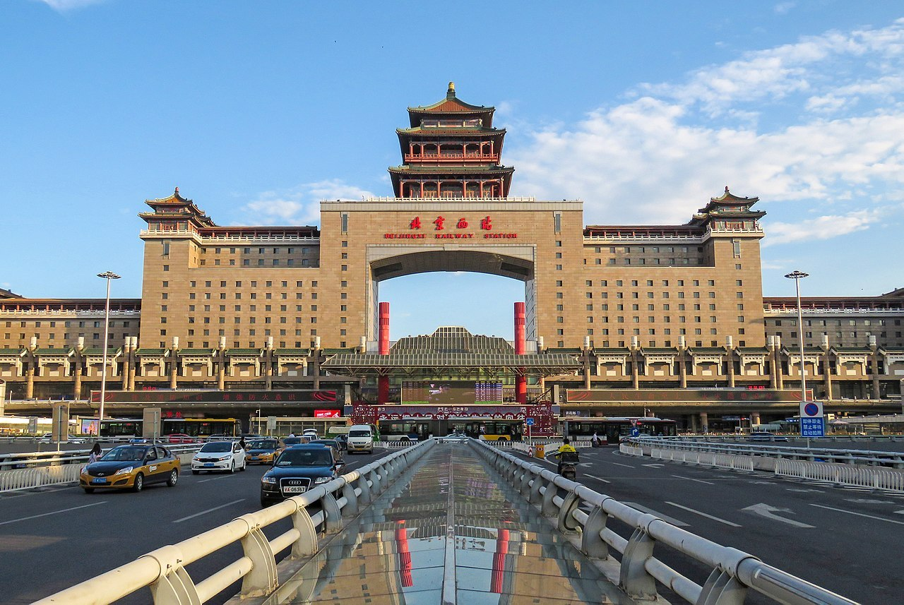
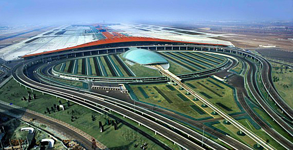

| 北京 | |||||
|---|---|---|---|---|---|
| 首页 | 历史沿革 | 地理环境 | 交通运输 | 风景名胜 | 历史文化 |
| 交通运输 | |||||
铁路 铁路线路
北京是中国铁路网的中心之一，国内线路主要有京九铁路、京沪铁路、京广铁路、京哈铁路、京包铁路、京原铁路、京通铁路、京承铁路和京沪高铁、京广高铁、京哈高铁、京津城际铁路等 在国际铁路运输方面，经内蒙古自治区满洲里市去往俄罗斯各城市、经内蒙古自治区二连浩特市去往蒙古国都城乌兰巴托和朝鲜都城平壤以及去往越南都城河内的列车均从北京发车。 主要车站
北京站：位于东便门西侧。建于1959年，是全国铁路客运重要枢纽，北京第三大火车站。 北京南站：位于永外大街。2008年改建完成，成为亚洲第二大的火车站，是京沪高速铁路的重要站点（仅次于铁路上海虹桥站）。 北京西站：位于莲花池东路。建于1996年。 北京北站：位于西直门。建于1905年，是京张铁路上的车站之一。现北京北站于2009年改建完成。 北京东站：位于百子湾。建于1938年。 北京朝阳站：位于朝阳区，2021年1月22日投入使用。 北京大兴站：位于大兴区，北京大兴站于2019年9月26日投入使用。 北京大兴机场站：位于大兴区，北京大兴站于2019年9月26日投入使用。 北京清河站：位于海淀区，北京清河站于2019年12月30日投入使用。 [119] 北京丰台站：位于丰台区，北京丰台站于2022年6月20日开通运营。 [159] 北京西站航空 北京市境内共有两座大型机场，分别为北京首都国际机场和北京大兴国际机场。 北京首都国际机场是全球规模最大的机场之一，是中国国际航空股份有限公司（AirChina）的主要运营中心，位于北京市顺义区（行政属朝阳区），距北京市中心20千米。旅客吞吐量在2012年达到8192.9万人次，仅次于美国哈兹菲尔德-杰克逊亚特兰大国际机场，位居全球第二。机场和北京市区间由北京首都机场高速公路、北京地铁首都机场线连接。 北京大兴国际机场位于北京市大兴区和河北省廊坊市的交界处，于2019年9月25日正式通航。2019年，北京大兴国际机场共完成旅客量吞吐量313.5074万人次，货邮吞吐量7362.3吨。 北京还建有5座机场：北京南苑机场（已关闭）、良乡机场、北京西郊机场、北京沙河机场、北京八达岭机场 北京首都国际机场
市内交通 市内公路 北京老城区（二环路以内）的城市道路是棋盘式的格局，横平竖直。东西方向的道路有长安街（复兴门至建国门）、平安大街（东四十条豁口至车公庄）、广安大街（广安门至广渠门）。南北方向的道路有中轴线，从玉蜓桥到雍和宫的东线和开阳桥到积水潭桥的西线。东线路过方庄、红桥、崇文门、东单、东四、北新桥和雍和宫；西线路过菜市口、宣武门、西单、西四、新街口。因为天安门广场和紫禁城的原因，北京的中轴线分为北中轴和南中轴。北中轴从地安门向北，经鼓楼、北辰路，达国家奥林匹克体育中心；南中轴从前门向南经天桥、永定门，达三营门。南中轴和104国道重合。 2021年末，北京市公路里程22289.9公里，比2020年末增加25.8公里。其中，高速公路里程1176.5公里，增加3.2公里。年末城市道路里程6167公里，比2020年末增加20公里。 2021年末，北京市公共电汽车运营线路1217条，比2020年末增加10条；运营线路长度28580公里，增加161公里；运营车辆23079辆，减少869辆；全年客运总量23.0亿人次，增长25.8%。 出租汽车 2013年，北京市出租车日均运送190万人次，占总出行量的6.6%，里程利用率约68%。2013年6月10日起调整北京出租汽车价格标准，新的出租汽车价格为：3千米以内13元，基本单价每千米2.3元。燃油附加费每运次1元。低速行驶和等候费每5分钟早晚高峰期间加收2千米租价（不含空驶费），其他时段加收1千米租价（不含空驶费）。预约叫车服务费为提前4小时以上预约每次6元，4小时以内预约每次5元。单程载客行驶超过15千米部分收取空驶费，基本单价加收50%的费用。 汽车牌照 京A（1996年前）；京B（出租车）；京C（1996年）；京E（1997年）；京F（2002年）；京G（郊区户籍车）；京H（2003年）；京J（2005年）；京K（2006年）；京L（2007年）；京M（2008年）；京N（2008年）；京O（公安）；京P（2008年）；京Y（郊区户籍车）；京V（中央直属部队）；京Q（2012年）。 |
|||||